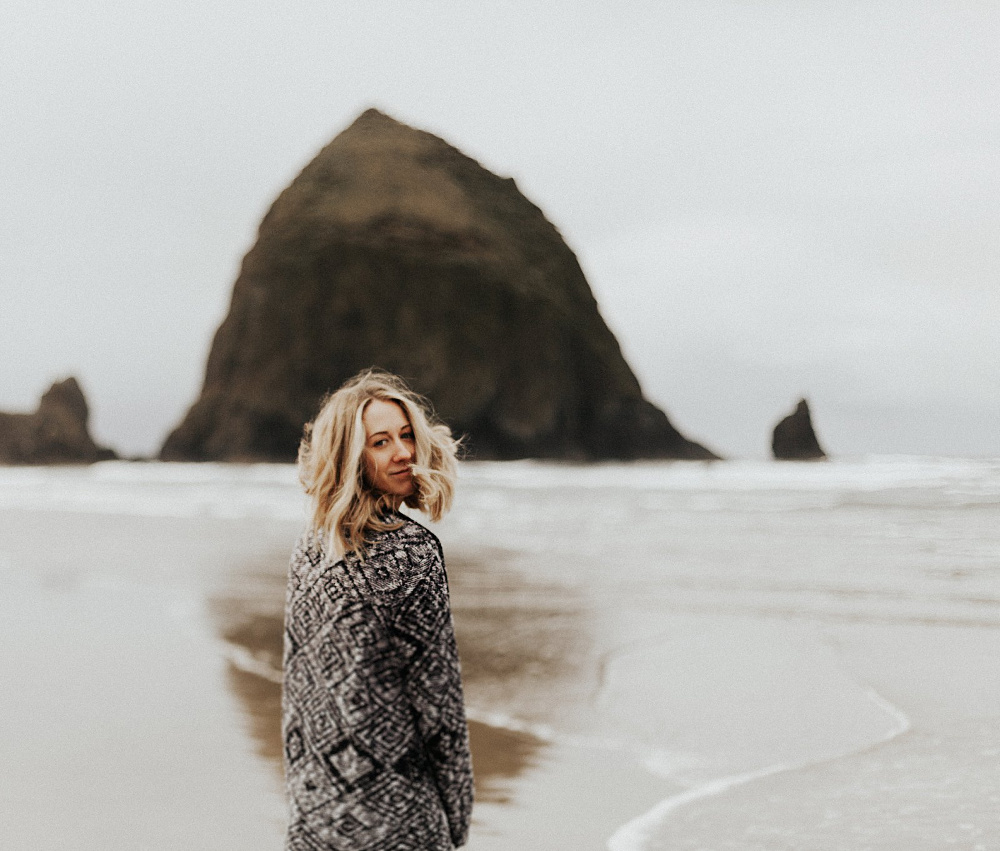
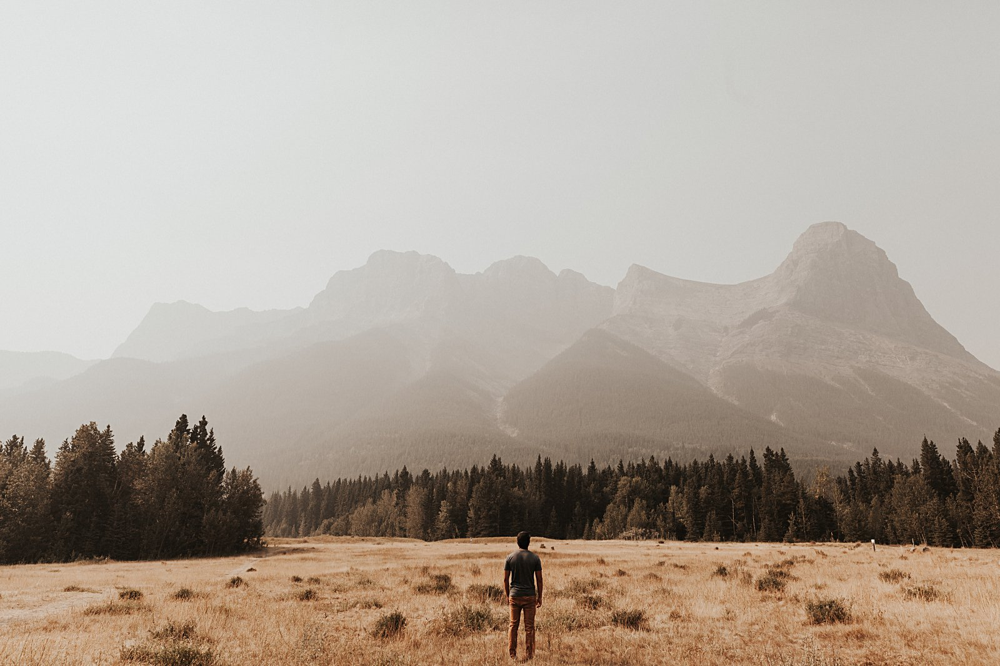

Everyone should really get to know your photographer or your videographer before your perhaps the most important day. Is the person capturing your special day understand how you see things? Does she/he know what I personally like? Before you book Liz and I as your photographer and videographer, I'd really like you to know who we are.
We come from the rockies mountain, where we have found our true love for the nature. We are very much outdoor people. During the spring/summer season, you will find us on top of the rockies exploring and running wild to capture rad moments for ourselves as well as others. You may even find us rock climbing on the side of kelly canyon. There's nothing more that makes us truly happy than the nature itself.
During the winter, We are always seeking for opportunities to get up to Grand Targhee resort in Alta, Wyoming to shred some 'pow pow'. There's no greater feeling of shredding fresh snow powder and then come down to the lodge and eat a giant burrito and drink nice warm hot chocolate.
Of course, we cannot not talk about our journey and passion of photography/videography. We are at the heart of Idaho, building our portfolio and experience in a small college town called Rexburg. We have met many passionate and wonderful couples out here and we were able to create very high-quality contents, all thanks to those amazing love birds.
If you are looking for free souls that understand finding happiness from even the smallest things, we are whom you are looking for. If you care more about being formal, dress-up, and typical individuals, we are definitely not for you and your special someone. I hope you have somewhat good understanding of who we are so you can decide for yourself whether your pictures and video will turn out the way you want them.

Liz is a passionate, candid-style photographer with various experience under her belt. She started out as a family photographer and branched out to various genre of photography, including newborns, senior pictures, and public events, etc. and now she exclusively takes couples and wedddings only. Check out her Photography over here.

DJ is an upbeat and energetic videographer that creates his content out of nothing. He started out with Liz's small Canon Rebel SL1 and a kit lense but using Adobe Premiere Pro, he creates quality contents. So far he has done engagements, bridals, weddings, events and Travel. Check out his Videography over here.